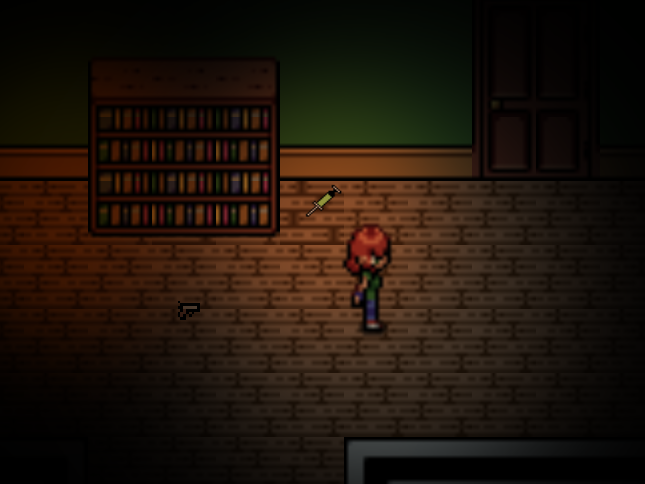

Blackout
My favorite genre of video games is the survival horror genre, more so games like the classic Resident Evil titles. My love for the genre is what motivates me and what influences my work in game development. A project I am currently working on due to my love of the genre is a game I call Blackout
Blackout is meant to be a top-down 2D survival horror game. There are two reasons I am choosing to do it in a 2D top-down style.
- 1. 2D is a lot easier to make than 3D and acts as a really good starting point (though some early prototypes were in 3D)
- 2. I find the idea of it interesting. I am challenging myself in trying to see how I could make it in this perspective
When thinking of making a survival horror game, even ideas I have not made yet, I always think of a gimmick or idea to set me apart or make it more interesting. For Blackout, the gimmick is lighting. The game is made to be dark in a lot of places and you have to use your lighter to navigate around easier.
The main gimmick of Blackout has been a massive help in trying to design the game. For example:
- 1. An enemy type (ghosts) hate your lighter and will go away if they cross your light
- 2. While early prototype footage shows the game to be too dark, that will be fixed later, even giving the protagonist a form of barrier that is showing a bit of light. However, there will be instances where you need to use it or would want to to see and navigate so much easier. Though your lighter is limited so it needs to be used wisely
- 3. The lighter is meant to make things easier to see, however, it is an equipable item. So you can not use it while wielding a gun.
If you are curious about the progress so far, although not much, here is footage of a very early prototype: Link